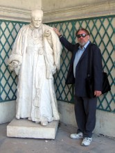

Please note: the AAS Obituaries are temporarily being hosted on this website while their full content is being ingested into the PubPub publishing platform newly adopted by the Bulletin of the American Astronomical Society. When the migration is complete, your existing links will take you to the final, migrated content. Contact peter.williams@aas.org with any questions.
Richard A. Jarrell (1946-2013)
Richard Jarrell, 67, the leading historian of Canadian astronomy of his generation, died unexpectedly at home on 28 December 2013. He wrote the canonical narrative of the astronomical history and heritage of his adopted country. The continued currency of his account remains a fruitful monument to his work.
Born 29 August 1946, Rich was a native of Indiana, and he’d developed an interest in astronomy in childhood. When he was a little older, he experimented with telescope building, a widespread turn practiced by many amateurs at the time. For one precociously memorable project, he and a cousin tried their hand at producing an astronomy tome. Rich wrote the text, and his cousin produced the illustrations. Armed with copies of their “Commentariolus,” he and his cousin went door to door in their neighbourhood offering astronomical enlightenment. Their enthusiasm was rewarded, and their neighbours were kind; the work sold out.
Like so many of us, Rich when young was certain that he was destined to become a professional astronomer. Upon completion of his secondary education in 1964, he enrolled in the undergraduate astronomy program at Indiana University, benefitting from the Residence Scholarship Program. Alas, the mathematical requirements of the astronomy program proved discouraging. Rich found another way to study astronomy, and contribute to the discipline, by studying its history. He graduated with distinction, achieving a major in history, and minors in astronomy and the history of science. In the course of pursuing his undergraduate degree, he encountered Vic Thoren (Tycho’s eventual biographer), who became a friend and mentor. At Indiana, Rich also made the acquaintance of a music student, who in the decades to come would greatly aid him as an “in-house” editor of his work—his future wife Martha.
Rich was certain that he wanted to pursue graduate work in the history of science, but the question was where? His fundamental disagreement with his country’s policies and actions in regard to Southeast Asia made the option of attending a foreign graduate school worth investigating. Canada beckoned, and he enrolled in the Institute for the History & Philosophy of Science & Technology (IHPST) at the University of Toronto. He received his M.A. in 1969, the year after IHPST had been established.
In Rich’s day, the best known figure (and in some ways most notable character at IHPST) was the indomitable Stillman Drake, former financier, noted bibliophile, and remarkable autodidact disciple of Galileo. Drake, a highly productive scholar of international repute, was recruited to the faculty about the time Rich arrived, and became his doctoral supervisor.
Another key influence on Rich was John W. Abrams, a formally trained astrophysicist, who was the founding Director of IHPST, and a professor of Mechanical and Industrial Engineering at the University of Toronto. Abrams was a scholar of wide interests, who advocated an interdisciplinary approach to the history of technology. His attention to the interaction of scientists and their apparatus in the production of science was shared by his student.
Rich’s doctoral thesis, which he defended early in 1972, was on The Life and Scientific Work of the Tübingen Astronomer Michael Maestlin, 1550-1631 . The external examiner was C. Doris Hellman of CUNY. A recent paper (2014) modifying one of Rich’s judgements notes that his thesis: “...remains the best monograph about the Tübingen astronomer to date.” The tragedy here is that it never saw the light of day as a book.
The subject of his thesis did feature in several published contributions, however, one on Maestlin’s place in astronomy (1975), and another on Maestlin within the Tübingen setting (1981). Rich was invited to contribute to the IAU’s and IUHP’s (International Union for the History and Philosophy of Science) General History of Astronomy, with a chapter on “The Contemporaries of Tycho Brahe” (1989).
Rich’s early-won expertise in the area saw him appointed to the editorial team of Springer’s
The Bibliographical Encyclopedia of Astronomers
(BEA; Hockey et al., 1
st
ed. 2007), as the content editor with responsibility for “Renaissance and Enlightenment Astronomers.” Rich was also a major contributor of biographies to the project, although he fathered more modern than “Renaissance/Enlightenment” entries (31 of the former to 5 of the latter; interestingly enough he didn’t write the account of Maestlin, however its author paid him bibliographical tribute). He reprised this task for the expanded second edition of BEA (Hockey et al., 2
nd
ed. 2014), which won the 2017 Donald E. Osterbrock Book Prize from the AAS’s Historical Astronomy Division. Those of us whose contributions fell under Rich’s oversight were grateful he felt no need to impose a stamp of authority when none was needed.
One of the abiding curiosities of the pursuit of the history of Canadian astronomy in Canada is how few people pursue it. It took an adopted Canadian to produce the first real history of astronomy in Canada. The Cold Light of Dawn: A History of Canadian Astronomy (1988) was a landmark event in the field. It was a larger and more ambitious survey than anything which had been attempted hitherto, and has not been subsequently superseded.
Rich’s post- Cold Light publications amply demonstrated that his interest in the broad and narrow subjects of his monograph didn’t wane upon its appearance and reception. He continued to write about the triumvirate of major Canadian installations culturally ancestral to the CFHT―the Dominion Observatory, the Dominion Astrophysical Observatory, and the David Dunlap Observatory. Certain sub-disciplines of Canadian astronomy attracted his particular attention after Cold Light , in particular, meteoritics and radio astronomy. One result of the latter interest is a valuable archive of oral interviews with many of the founders of radio astronomy in Canada.
His commitment to the HAD was of longstanding. His contribution to the HAD’s centennial project, The American Astronomical Society's First Century , was an ample paper on the Canadian members of the AAS (1999), “Honorary American Astronomers: Canada and the American Astronomical Society.” And he was involved in the preliminary stages of the Canadian portion of the HAD’s Astronomy Genealogy Project.
Teaching was one of his life’s passions. Rich spent his entire university career at York University (1971-2013), and was a very popular teacher, and a supportive colleague.
He was engaged in a book-length history of radio astronomy in Canada at the time of his death. His colleagues working with Martha Jarrell are endeavouring to see that the work will appear, transformed from a single-author perspective, to a multi-authored publication, but one still informed by his spirit. A symposium to build on his work was held at the DAO in 2016 ( http://astroherzberg.org/radiohistory2016/ ).
Photo: Martha Jarrell
Obituary Written By : R. A. Rosenfeld (RASC, & CASCA Archives: Toronto). This obituary is based in part on the obituary which appeared in JRASC 104, 4 (2014 August), 156-159, 162-163.
Additional links:
BAAS Citation: BAAS, 2018, 50, 027